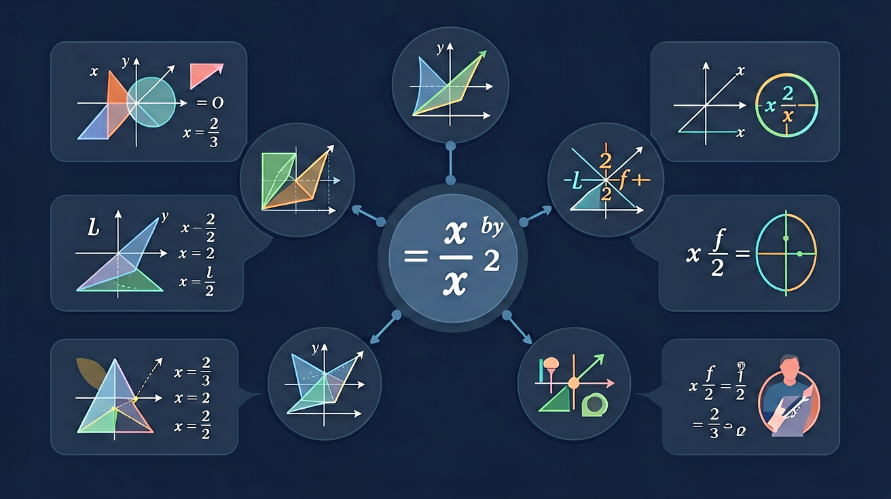

❓ 为什么解分式方程一定要检验？
❓ 分母有字母和分母有数字的方程解法一样吗？
❓ 工程问题用分式方程解时单位怎么处理？
学完这一课，这些问题你都能自信地回答。
🎯 能说出分式方程检验的必要性
🎯 能判断分式方程增根的产生条件
🎯 能计算含两个分式的工程问题应用题
分母含未知数？小心增根的陷阱！

🚗 小李开车从A到B，速度为 v km/h，距离60km，需要 60/v 小时。若速度增加20 km/h，时间减少1小时，建立方程：
注意分母中含有未知数 v！这就是分式方程。
| 类型 | 特征 | 例子 |
|---|---|---|
| 整式方程 | 分母不含未知数 | 2x + 3 = 7 |
| 分式方程 | 分母含未知数 | 1/x + 2 = 3/x |
分式方程的分母不能为零！这是后面产生增根问题的根源。解题时必须检验解是否使原方程的分母为零。
分式方程难以直接求解，但如果两边同乘以最简公分母，就能把分式方程转化为整式方程来解！
例题：解 1/(x-2) + 1 = 3/(x-2)
去分母后得到的整式方程的解，可能恰好使原分式方程的分母为零。这个解在整式方程中有意义，但在原分式方程中无意义，叫做增根，必须舍去！
例：解 (x+1)/(x-1) = 2/(x-1)
解 x = k 代入所有分母，分母均 ≠ 0
→ 保留该解
解 x = k 代入某个分母，使分母 = 0
→ 舍去该解，注明"原方程无解"
不验根是解分式方程最严重的错误，会导致答案错误。每次都要检验解是否使分母为零。
任务：甲单独完成某项工程需要10天，乙单独完成需要15天。两人合作，完成后甲还需单独继续工作x天才能完成剩余部分，使整个工程恰好在8天内完成。求x。
【重建题目】甲独做10天，乙独做15天，合作几天完成？
设合作 x 天：x/10 + x/15 = 1
公分母30：3x + 2x = 30 → 5x = 30 → x = 6
合作6天完成。验根：x=6，分母10和15均≠0 ✓
时间=距离/速度，建立分式方程，解决追及和相遇问题
效率×时间=工程量，分式方程在工程中的经典应用
溶质/溶液=浓度，含分式的化学数学综合题
为什么增根产生？等价变换与非等价变换的区别
先独立作答，再点选项查看对错与错因。
解方程 2/(x-3) + 1/(x+2) = 0 时，第一步应
若分式方程 3/(x-2) = a/x 有增根x=0，则a的值为
施工队完成工程问题中，设甲队工作x天，正确的工作量表达式是
方程 1/(x-1) - 2/x = 0 的解是____（需检验）
答案：2
解得x=2经检验不是增根
若分式 (x²-4)/(x-2) 的值为0，则x=____
答案：-2
分子为零且分母不为零时成立
关于分式方程检验，正确的是
比较不同合作天数对总工期的影响
分式方程=分母含未知数的等式
去分母转化为整式方程，可能产生不符合原方程的增根
与整式方程相比，解分式方程多检验步骤
工程问题中，工作量/工作效率=工作时间
可转化为行程问题、浓度问题的同类型计算
✅ 解完后必须代入最简公分母验证
💡 未理解增根产生原理
✅ 用括号整体乘以最简公分母
💡 分配律运用不完整
✅ 区分‘化简求值’和‘解方程’不同要求
💡 未建立程序性知识
口诀：分式方程两步走，去分母后要检验
类比：就像过滤水要筛杂质，解方程也要筛增根
分式方程 (x-1)/(x+2)=0 的解是
解方程 3/(x-2)=1 的第一步是
真题：若分式方程 2/(x-3)+k/(3-x)=1 有增根，则k=____
迁移：轮船顺流速度是静水速度的1.2倍，逆流航行10km比顺流多花0.5小时，设静水速度为x km/h，应列方程
若关于x的分式方程 (mx+1)/(x-2)=3 的解是正数，则m的取值范围是
And：学生已掌握整式方程解法
But：遇到分母含未知数的方程不会处理
Therefore：需要学习分式方程转化技巧
分式方程就是分母含有未知数的方程，比如 3/(x+2)=5。关键步骤是'去分母'：①找到所有分母的最简公分母(x+2)；②方程两边同时乘以公分母，得到3=5(x+2)。注意要检验根是否使原分母为零，比如x=-2就不是合法解。
🌍 就像调配消毒水时，原液和水的比例是1:x，现在知道2升原液配5升水，就能列出方程1/x=2/5来求解。
解方程 2/(x-3)=4 的第一步是？
💡 去分母后检验增根。
外链：https://phet.colorado.edu/sims/html/equality-explorer/latest/equality-explorer_zh_CN.html
开放任务：用三步写出你如何向同学讲清「分式方程」。